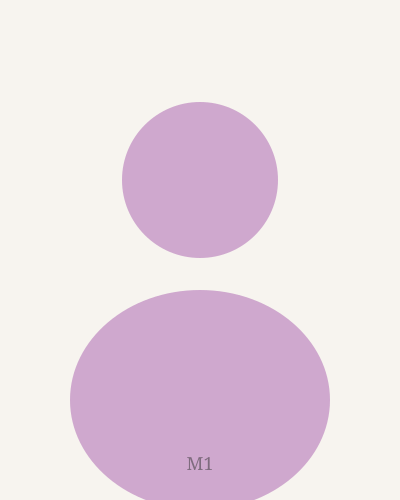
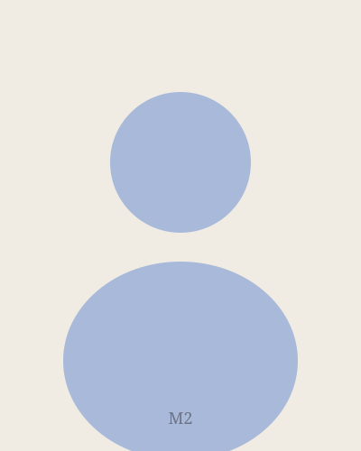
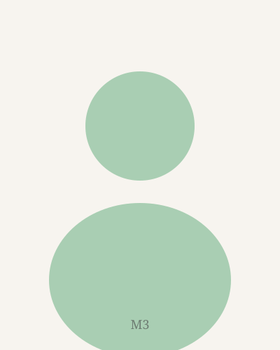
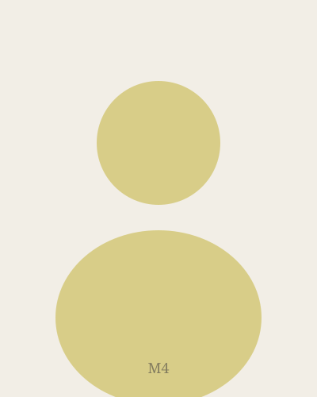
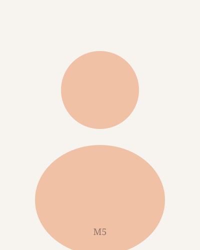
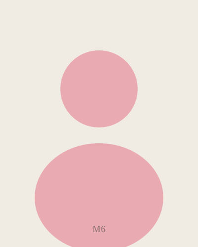

Ana Beatriz Oliveira
Pesquisadora associada
Interessa-se por políticas de memória e arquivos digitais. Desenvolve pesquisa sobre patrimônio documental e acesso aberto.
Pesquisadores e estudantes vinculados aos projetos do núcleo.

Pesquisadora associada
Interessa-se por políticas de memória e arquivos digitais. Desenvolve pesquisa sobre patrimônio documental e acesso aberto.

Doutorando
Estuda ecologias midiáticas e práticas de leitura em ambientes digitais. Participa do projeto sobre circulação de saberes.

Mestra / pesquisadora
Trabalha na interface entre comunicação e educação. Coordena atividades de extensão ligadas à alfabetização mediática.

Mestrando
Investiga narrativas visuais e produção de sentido em espaços urbanos. Colabora na documentação fotográfica do grupo.

Pesquisadora visitante
Dedica-se a estudos comparados de cultura digital na América Latina. Atua em redes internacionais de pesquisa.

Bolsista de iniciação científica
Apoia o levantamento bibliográfico e a organização de dados dos projetos em andamento no laboratório.